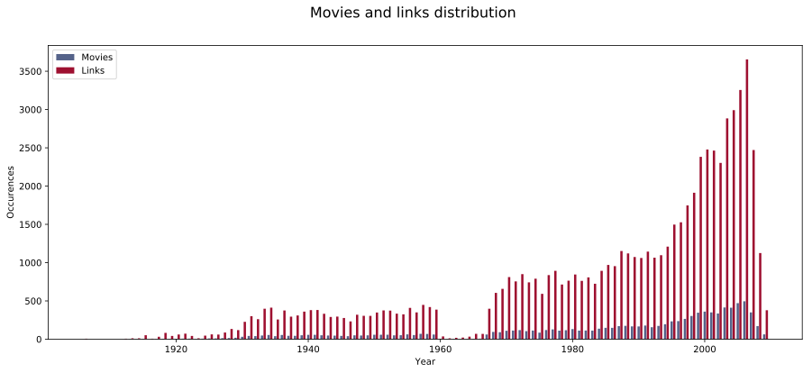

Final project 02805 Social Graphs and Interactions
Main | Data Stats | Graph | Sentiment | Communities | Conclusion | Notebook
In order to analyse the cleaned data, a weighted graph over the network of actors were created. This was done by creating a list of all the actors in the data set and linking them through their movies.
By doing this each actors is a node in the network and each edge then corresponds to the actors being in a movie together, the weight of the edges corresponds to the amount of movies the actors have been in together.
Each Node has two attributes, describing their name and gender. The gender attribute it used to color the nodes, by making actors blue and actresses red.
The total network of all actors, ended up with a size of 16.759 nodes and around 55.000 links.
 As seen on the graph above, the network of all the actors are quite large with a lot of nodes and edges.
As seen on the graph above, the network of all the actors are quite large with a lot of nodes and edges.
a relevant way to split up the network into smaller networks were to look at the dates, for which the movies were released.
The reason why it is relevant to look at the movies release year is, that people have different prefferences, not only in genres, but also in what time era the movies are from. Some like older movies and others like modern movies.
Categorizing movies
Before splitting the graphs into time periods, it is relevant to decide when these time periods should be. In order to do this a histogram was created, which shows how many movies were made each year. This graph makes it possible to see which time periods each graph should contain, such that they don't contain too many or too few nodes.The histogram:  Based on the histogram, it can be seen that in the time period between 1960 and 1970, almost no movies were made. When looking at film history, there was a decline in the studio system which began in the 40s. The reason for this was that a lot of the larger hollywood film studios were sued over a system called "block-booking" which was a system where a cinema had to buy a whole year worth of films from a company. By doing this they had to buy future movies, before they were made. This lawsuit had a great impact on the movie industry and resulted in a consent agreement which stated that block booking and buying movies without seeing them first were removed.
As seen on the histogram, this resulted in almost no movies being made in the 60s.
in 1967 the movie "Bonnie and Clyde" were released, which is seen as the new beginning of the American movie industry. This can be seen as the year in the histogram, where movies are once again being made.
Since the movie industry were once again on the rise after the 70s, it was decided to have the first time period as any movies before the 70s and then having the rest of the time periods in intervals of 10 years.
The last time period would be 2010-2017, however since this is not a full time period of 10 years it was decided to instead make the last time period 2000-2018 since movies made after the year 2000, can be seen as modern movies.
Graph per interval.
Based on the established time intervals, the different plots were created. In the figure bellow it is possible to chose the graph being displayed in the drop down menu. It is possible to zoom on the graphs, by scrolling on the mouse wheel, while hovering over the graph. Once zoomed the graphs can also be dragged in order to look at different parts of the graph.
For the period 1900-1970 it can be seen that some of the most active actors were John Wayne, Barbara Stanwyck and Randolph Scott. When looking at these actors on IMDB it can be seen that John Wayne has been in 178 movies in the time period 1926- 1976, Barbara stanwyck has been in 106 movies between 1927-1986 and that Randolph Scott has been in 107 movies in the period 1928-1962. It is therefore very fitting that these actors/actresses are large nodes in this network.
Throughout all the time periods it can be seen that the node sizes fits the IMDB pages, however there are a few interresting special cases.
Special nodes in graphs.
In the time period 1970-1980 there is a quite large node "Paul Naschy" which is far away from all other big nodes in the network. When looking at his IMDB page it can be seen that he is "The true king of spanish horror cinema". When looking at the network it makes sense that he is a large node, since he has been in over 120 movies. The reason why he is so far away from everyone else is that he was in spanish movies, where as the other large nodes were in American movies.In the period 1990-2000 there is another large node, which is far away from other large nodes. This actor is called "Shah Rukh Khan" and is a famous Indian actor. He has been in over 100 movies, however like Paul Naschy these were not American movies, which is why he is so far out in the network.
Finally in 2000-2018 it can be seen that there are suddently a small group of big nodes, containing indian actors. When looking at the Indian film industry, it can be seen that Indian movies started to grow globally in the early 2000s. This resulted in more money being put into the Indian film industry and therefore a larger production. This growth in Indian film industry is what results in this new group of big nodes, seen on the graph.